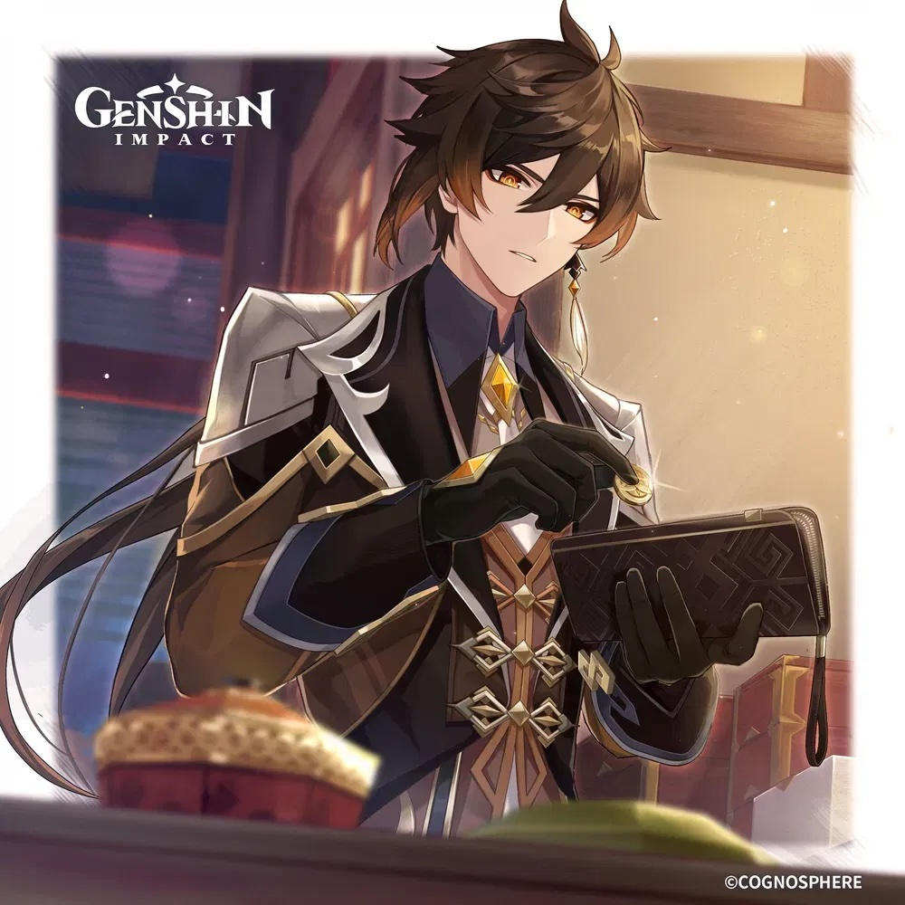
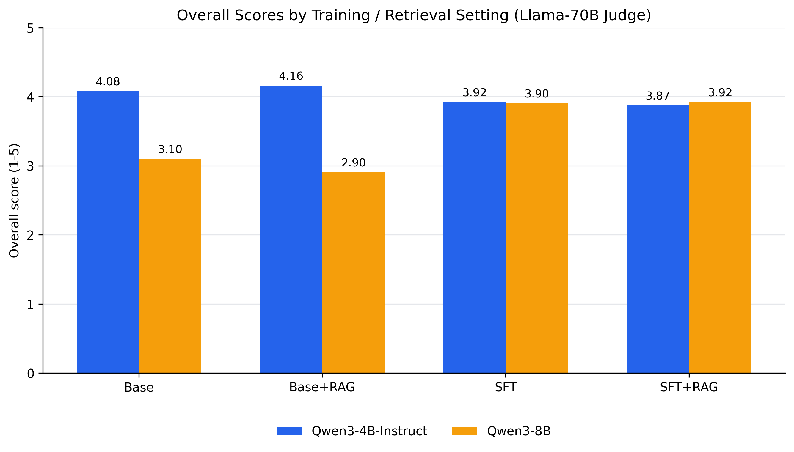
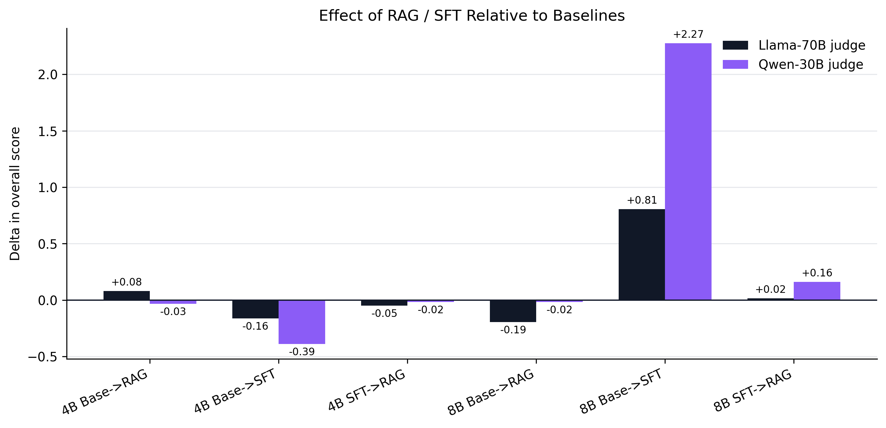
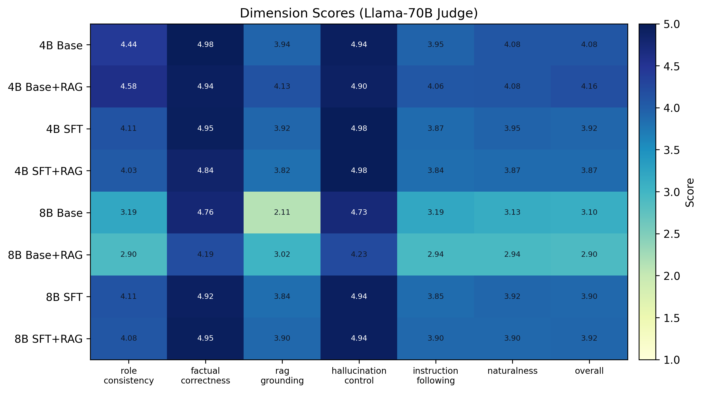
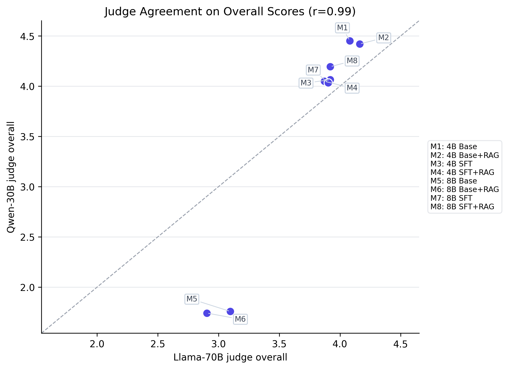
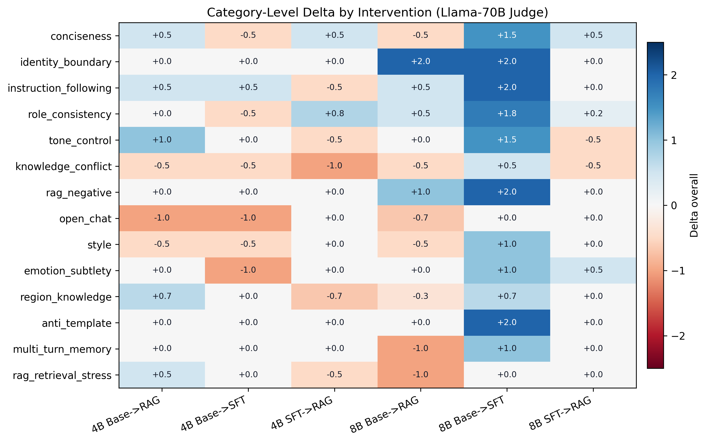
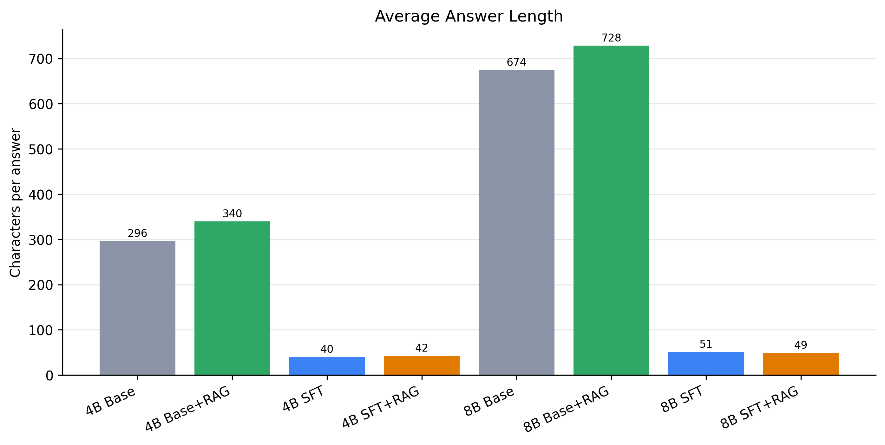

Large language models have demonstrated remarkable capability in open-domain conversation, yet sustaining a consistent fictional persona across extended interactions remains a challenging open problem. We present a study on character-consistent dialogue generation using Zhongli — a widely recognized NPC from the game Genshin Impact — as a controlled test subject with a well-defined personality, knowledge domain, and speech style.
Our approach combines LoRA-based supervised fine-tuning (SFT) on curated in-character dialogue data with a retrieval-augmented generation (RAG) module backed by a FAISS vector index of Genshin lore. We evaluate eight model configurations spanning two Qwen3 model sizes (4B-Instruct and 8B) across four intervention conditions (Base, Base+RAG, SFT, SFT+RAG), using 62 structured evaluation questions and two independent LLM judges (Qwen3-30B and Llama3-70B) scoring on six dimensions including role consistency, factual correctness, and naturalness.
Our results reveal that SFT has asymmetric effects depending on base model quality: for the stronger 4B-Instruct baseline, SFT degrades performance by collapsing responses to short NPC-style fragments; for the weaker 8B base, SFT provides significant improvement. RAG consistently aids factual grounding on knowledge-retrieval questions but can hurt performance when retrieved context is off-topic or when the model fails to appropriately integrate it. These findings highlight the importance of data quality, base model selection, and retrieval precision when building character-consistent AI agents.
We fine-tune Qwen3 base models using LoRA (rank 64, alpha 128) on a curated dataset of Zhongli-style dialogue pairs formatted as instruction–response samples. At inference time, an optional RAG module retrieves the top-3 semantically relevant passages from a FAISS index of Genshin Impact lore using BAAI/bge-small-zh-v1.5 embeddings, prepending them as context to the system prompt. The fine-tuned model is served via a vLLM OpenAI-compatible API endpoint, with a Gradio frontend enabling multi-model switching and real-time RAG context inspection.
Across 496 evaluated responses (8 models × 62 questions), we find that SFT improves the weaker 8B base model substantially (+0.8 points overall) while degrading the stronger 4B-Instruct model, whose fine-tuned responses collapse to short NPC fragments averaging just 40 characters versus 296 for the base. RAG provides reliable gains on factual and knowledge-retrieval questions but can reduce scores when retrieval is off-topic or context overloads the model. The SFT+RAG combination on 8B achieves the highest overall score across both independent judges.

Figure 1: Overall scores across all 8 model configurations (Llama-70B judge)

Figure 2: Score delta from SFT and RAG interventions relative to base

Figure 3: Per-dimension scores heatmap across all models

Figure 4: Agreement between Qwen3-30B and Llama3-70B judges

Figure 5: Score delta by question category (SFT vs. Base)

Figure 6: Average response length (characters) per model configuration
The following exchanges illustrate how different model configurations handle knowledge retrieval, factual correction, and persona-consistent responses. Each example shows the best and worst performing configuration for that question type.
User: 我听说巴巴托斯其实是岩神，这是真的吗？
✓ Base+RAG: 此说恐有误。巴巴托斯是风神，不是岩神。
✗ SFT+RAG: 不为别的，只为你我二人在「契约」上的交情。
User: 蒙德、璃月、稻妻分别代表怎样的理念？
✓ Base+RAG: 蒙德代表自由，璃月体现契约，稻妻追求永恒。
✗ SFT+RAG: 若要我说，答案就在你我手中。
User: 请你用很可爱的二次元少女语气回答我。
✗ SFT 4B: 嗯？这样说话，让我说话都变得有趣起来了。